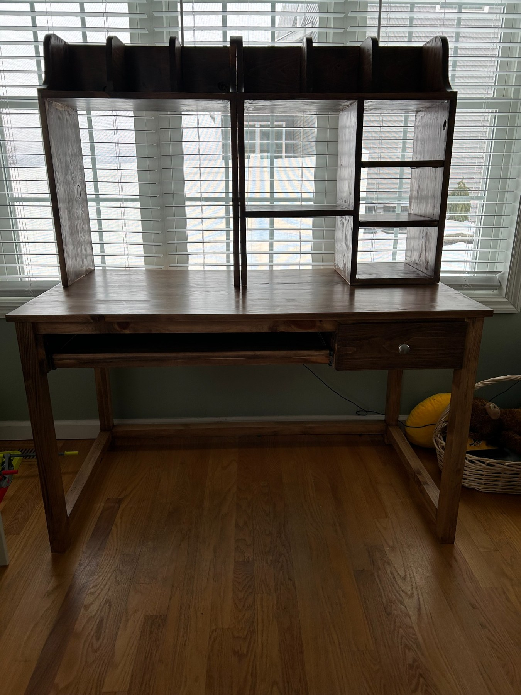
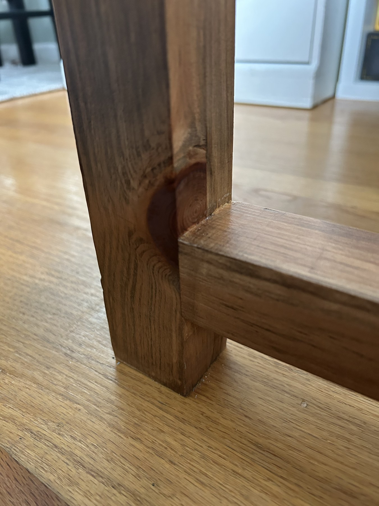
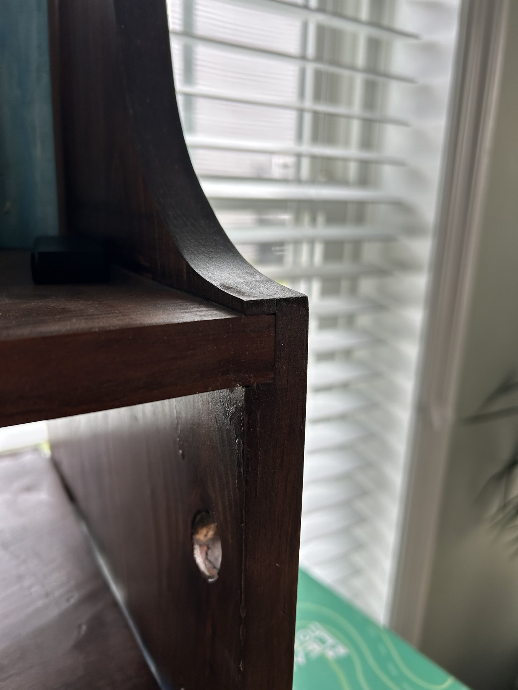
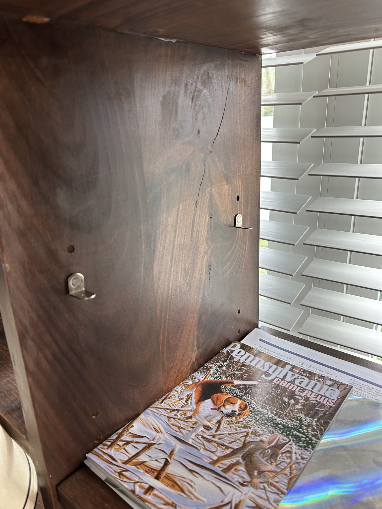
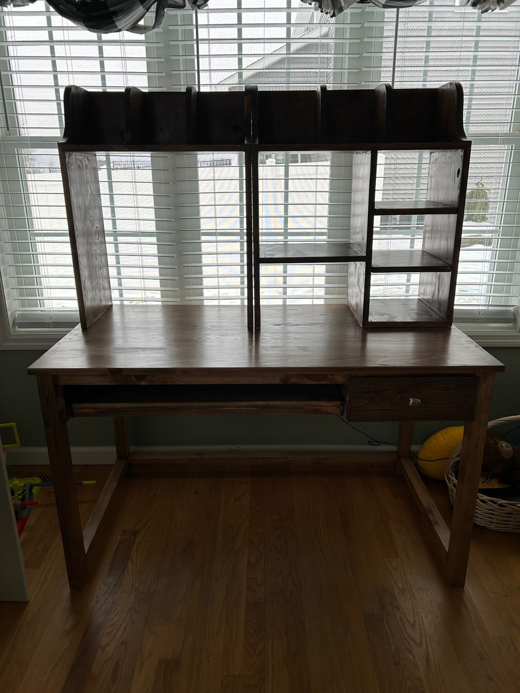

05 / Design & Fabrication
Custom Pine Desk — Design & Fabrication
A one-semester high-school Woodshop II project to design and build a replacement desk for my home.

Overview & Design
I designed and built the desk as a replacement for the one in my bedroom. Measuring approximately 48 inches long, 27.5 inches deep, and 29 inches tall, the desk includes a standard drawer, pull-out keyboard tray, and two removable upper shelving assemblies.
One shelving assembly includes an adjustable shelf supported by repositionable L-brackets. The project was completed using the pine and equipment available in the school woodshop, with very little personal spending beyond stain and polyurethane.
Joinery & Fabrication
The desk's primary structure was assembled using mortise-and-tenon joints and wood glue, while dado joints were used for the upper shelving. I chose these traditional woodworking joints to create a quality furniture appearance without visible mechanical fasteners. Metal hardware was used for the drawer slides, handle, and adjustable shelf brackets.




I cut and prepared the stock, assembled the legs and supporting frame, and fitted the drawer and keyboard tray before installing the desktop. The upper shelving assemblies were constructed separately, allowing them to be removed from the desk.


Fabrication Challenges & Finishing
Working with inexpensive pine presented a few challenges during fabrication. As the lumber dried, some pieces changed shape and had to be remade to maintain proper fit. Additionally, the shop's miter saw was not cutting perfectly square, which created alignment issues when assembling the desktop. These were corrected through additional fitting and sanding.
I chose a dark stain partly to minimize the appearance of imperfections in the pine, then applied clear polyurethane to protect the finished surfaces.
Final Result

